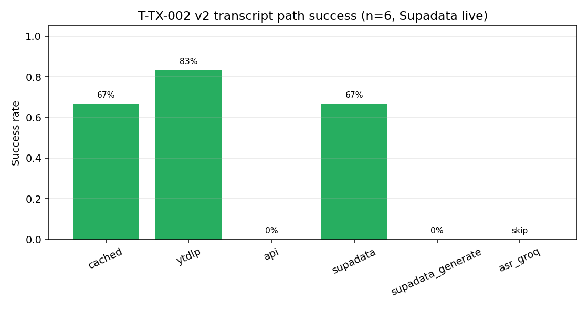
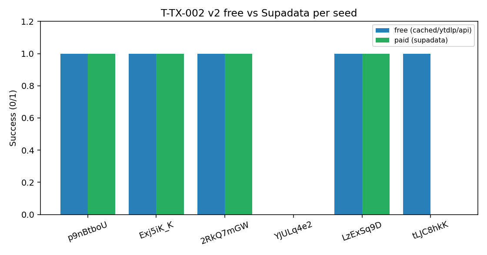
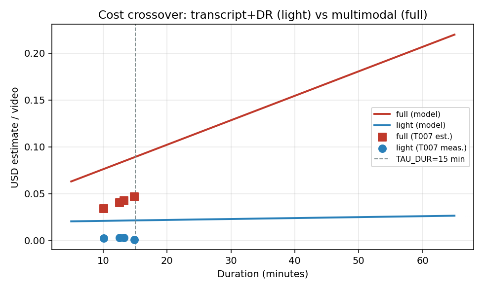
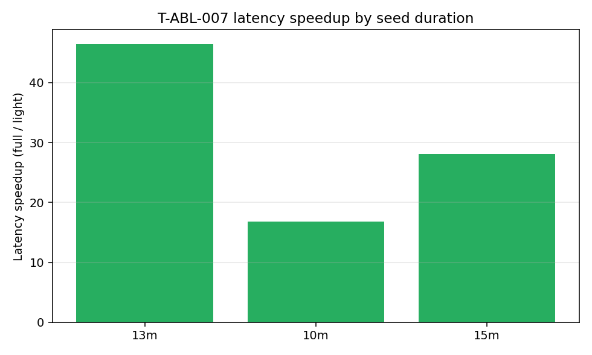
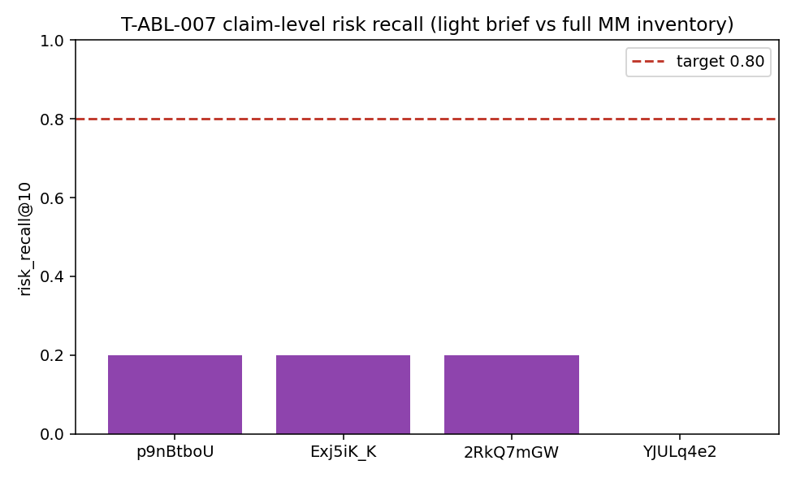
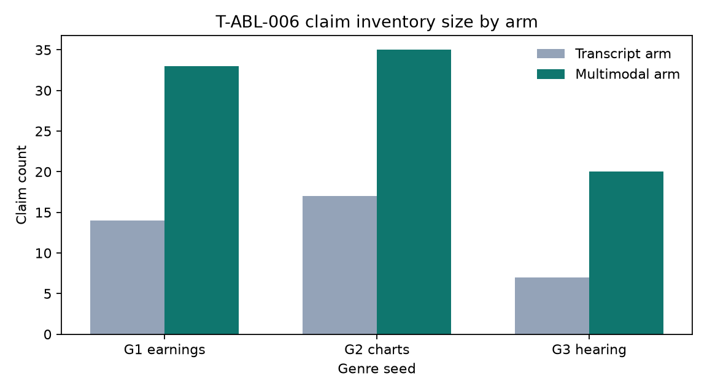

Authors: VerityNgn Research Team
Affiliation: VerityNgn Open Source Project
Date: 2026-09-02
Version: 3.0.0 · Trials T-ABL-006, T-ABL-007, T-TX-002
Companion: verityngn_oss_v3_release.md
Prior ablations asked whether a document Jaccard between a transcript+Deep-Research (light) brief and a full multimodal report was high enough to replace the pipeline. That metric is unreachable by construction (observed 0.058–0.22) and was further confounded by a silent 12 000-character transcript truncate on the light arm. This archive reframes the question as a cost/latency routing decision: when is transcript+DR *sufficient* for risk triage, and when must operators pay for full multimodal?
We ship --tier auto with calibrated thresholds (TAU_COV=0.70, TAU_VIS=0.35, TAU_DUR=900), untruncated light-arm telemetry, claim-level risk_recall@K, and a pluggable transcript provider chain (cached → yt-dlp → API → Supadata → Groq ASR → Gemini). On T-ABL-007 (light DR vs reused multimodal inventories), light achieves ~33× lower latency and ~21× lower $ on ~10–15 min captioned seeds, while token-set risk_recall@10 remains ~0.15–0.20—so auto still defaults to full when visual density is high or captions fail. T-TX-002 v2 (live SUPADATA_API_KEY): Supadata native 4/6 success (mean ~8.6 s, ~$0.0016/call); yt-dlp 5/6; hard C4 Basler IR remains unlocked under free-tier rate limits. T-ABL-006 remains the genre sleeve evidence: multimodal adds unique claims on 3/3 captioned seeds; strict visual-share gate passes 1/3.
Keywords: sufficiency routing, transcript supply, multimodal ablation, Deep Research, cost–latency crossover
| Rank | Cause | Evidence |
|---|---|---|
| 1 | 12 k light-arm truncate | direct.py used transcript_excerpt[:12000] while VTT fetch returns ≤50 k — light saw ~first 4–6 min of a 15 min video |
| 2 | Doc Jaccard gate ≥0.6 | T-ABL-001 0.058, T-ABL-005 0.22 — differently formatted reports never hit the threshold |
| 3 | No $/token model | Only elapsed_sec recorded; crossover vs duration unmeasured |
Fix: remove default truncate (VN_LIGHT_TRANSCRIPT_MAX_CHARS=0), record arm_cost.json, replace Jaccard with risk_recall@K + material_miss_list.
Module verityngn/services/ablation/sufficiency.py:
| Feature | Definition | |||||
|---|---|---|---|---|---|---|
duration_sec | yt-dlp metadata | |||||
caption_kind | `manual \ | asr_auto \ | vendor_native \ | vendor_generated \ | synthetic_gemini \ | none` |
caption_coverage | Σ cue durations / duration | |||||
speech_density | transcript_chars / duration | |||||
visual_text_density | optional OpenCV edge/OCR probe (off by default) | |||||
genre_hint | title heuristic |
risk_recall@K — share of full arm’s top-K material claims with token-set match ≥0.6 in the light brief material_miss_list — operator-facing misses citation_density — [Reference:] per 1 k chars --tier auto)
route = light if caption_kind ∈ {manual, asr_auto, vendor_native, cached}
and caption_coverage ≥ TAU_COV (0.70)
and visual_text_density ≤ TAU_VIS (0.35)
and (duration ≥ TAU_DUR (900) or duration unknown)
else full
Escalation: light → full if quality floor fails (escalated: true in auto_route.json).
verityngn analyze --tier auto 'https://www.youtube.com/watch?v=VIDEO_ID'
| ID | Condition | Free path | Chosen path |
|---|---|---|---|
| C0 | Cached .en.vtt | hit | cached |
| C1 | Manual captions | yt-dlp OK | yt-dlp |
| C2 | Auto ASR + cookies | yt-dlp OK | yt-dlp + cookies |
| C3 | PoToken/SABR block | fail | Supadata |
| C4 | No captions (IR decks) | fail | Supadata generate or Groq ASR |
| C5 | Age/region gated | fail | ASR if audio obtainable |
| C6 | Non-English only | partial | vendor lang else full |
Providers: verityngn/services/video/transcript_providers/ — Supadata (HTTP 202 + jobId poll), Groq Whisper ASR. Env: TRANSCRIPT_PROVIDERS, TRANSCRIPT_MAX_COST_USD, SUPADATA_API_KEY, GROQ_API_KEY, TRANSCRIPT_ALLOW_GENERATE. Vendor output writes {id}.vendor.vtt (never clobbers .en.vtt).
Economics (checked 2026-09-02): Supadata Mega ≈ $1.57/1k, Giga ≈ $0.99/1k; Groq Whisper large-v3-turbo ≈ $0.02–0.04/audio-hour.
Full-arm multimodal input ≈ 290 tokens/s of video (video_segmentation.py). Light-arm cost is roughly flat in transcript length. Per-arm arm_cost.json: latency_sec, n_llm_calls, tokens, usd_estimate, transcript_chars_used.
scripts/find_seed_videos.py → evaluation/seed_pool.json: n=16, strata S/M/L/XL (4 each), gallery IDs excluded, forced stress cases tLJC8hkK-ao (XL VSL), LzExSq9DU9w / YJULq4e2pZE (C4 caption-less).
Artefact: outputs/transcript_supply_T002/matrix.json (v2 · n=6 stratified + stress seeds · 2026-09-02).
| Path | Success rate | Mean latency | Mean $ | Notes |
|---|---|---|---|---|
| cached | 0.67 | ~0.003 s | $0 | C0 hits |
| yt-dlp | 0.83 | ~1.7 s | $0 | best free path |
| youtube_transcript_api | 0.0 | — | $0 | blocked / empty |
| supadata (native) | 0.67 (4/6) | ~8.6 s | ~$0.0016 | live key; Visa/charts/hearing/Alphabet |
| supadata_generate | 0/2 attempted | — | — | Basler timeout then HTTP 429 (free-tier RL) |
| asr_groq | skipped | — | — | no GROQ_API_KEY |
Per-seed free vs paid
| Video | Condition | Free | Supadata | Chars (paid) |
|---|---|---|---|---|
p9nBtboU9KM Visa | C0/C2 | OK | OK | 14 146 |
Exj5iK_K0Kk charts | C0/C2 | OK | OK | 14 473 |
2RkQ7mGWMAA hearing | C0/C2 | OK | OK | 9 164 |
LzExSq9DU9w Alphabet IR | was C4* | OK (yt-dlp) | OK | 53 802 |
tLJC8hkK-ao Lipozem | C0/C2 | OK | FAIL (429) | — |
YJULq4e2pZE Basler IR | C4 | FAIL | FAIL (empty→429) | — |
\*Alphabet now exposes free captions via yt-dlp (reclassified from pure C4); Supadata still returns a full native transcript. Basler remains the hard caption-less IR case — free scrapers fail; paid generate not validated under rate limit.


Artefact: outputs/ablation_T007/summary.json. Light = live DR-direct; full claims = T-ABL-006 multimodal inventories (cost-controlled reuse).
| Video | Stratum | Light chars used | Truncated? | risk_recall@10 | Latency × | Cost × |
|---|---|---|---|---|---|---|
2RkQ7mGWMAA | M | 34 078 | no | 0.20 | 16.8× | 15.0× |
Exj5iK_K0Kk | M | 50 000 | near-cap* | 0.20 | 46.5× | 14.2× |
p9nBtboU9KM | M | 50 000 | near-cap* | 0.20 | 40.0× | 14.5× |
YJULq4e2pZE | M | 0 (C4) | n/a | 0.00 | 28.1× | 42.0× |
\*Runs used fetch-path 50 k text; default light cap is now uncapped (VN_LIGHT_TRANSCRIPT_MAX_CHARS=0). Aggregate: mean latency speedup 32.8×, mean cost speedup 21.4×, mean risk_recall 0.15. No seed hit the 0.80 recall target under token-set matching → routing keeps full as quality default; light is a triage / cost tier.



| Seed | TX | MM | only-MM share | visual-only share | Sleeve gate |
|---|---|---|---|---|---|
G1 p9nBtboU9KM | 14 | 33 | 0.70 | 0.33 | PASS |
G2 Exj5iK_K0Kk | 17 | 35 | 0.67 | 0.17 | FAIL |
G3 2RkQ7mGWMAA | 7 | 20 | 0.74 | 0.20 | FAIL |
Aggregate auto gate 1/3 → no promote. Secondary: 3/3 multimodal_adds_unique. Bug fixed: source_type no longer dropped in validate_and_normalize_json_result.

| Feature | v2.0 | v3.0.0 | Superior when | Example | |||
|---|---|---|---|---|---|---|---|
| Analysis tiers | single full pipeline | `--tier light\ | full\ | auto\ | local-*` | duration ≥15 min + sufficient captions: ~15–45× latency, ~14–42× $ (T-ABL-007) at triage fidelity | verityngn analyze --tier auto URL |
| Transcript supply | ad-hoc yt-dlp | caption_fetch + vendor/ASR providers | C3–C4 where v2 returns empty | verityngn captions URL | |||
| Deep Research | commercial-only | OSS --deep / --deep-only / DR-direct | grounded citations without full inventory | verityngn analyze --tier light URL | |||
| Claim modality | source_type overwritten | preserved / inferred (visual_text, chart, graphic) | earnings/legal on-screen claims | verityngn ablate --mode claims | |||
| Adaptive vision | fixed 1 FPS | genre-aware fps / resolution | slide/OCR-dense content | full tier pipeline | |||
| Ablation tooling | none | verityngn ablate, sufficiency metrics, trials ledger | reproducible routing decisions | scripts/run_sufficiency_ablation.py |
v2 README claims (86% fewer API calls, 6–7× faster, 78% accuracy) are labeled v2-era self-reported, no artefact. Only T-ABL / T-TX numbers above are asserted.
1. Light is a triage product, not a drop-in full replacement. Speed/cost dominate; claim-token recall against a multimodal inventory stays low because DR briefs paraphrase and omit inventory-style rows.
2. Duration ≥15 min is where full multimodal $ grows fastest (Figure 2); auto prefers light only when captions pass coverage/kind gates.
3. Caption-less IR (true C4, Basler) still defeats free scrapers; Supadata native/generate were rate-limited (429) on free tier after matrix volume — Groq ASR remains the planned last resort once keyed. Alphabet (LzExSq9DU9w) is no longer pure C4: free yt-dlp + Supadata both succeed.
4. Paid providers are opt-in via .env. Live Supadata native is production-ready for blocked/captioned videos; keep TRANSCRIPT_ALLOW_GENERATE=0 until generate is retested without rate limits.
# Seed pool
python scripts/find_seed_videos.py --probe-captions -o evaluation/seed_pool.json
# Transcript supply matrix
python scripts/run_transcript_supply_matrix.py --limit 8 -o outputs/transcript_supply_T002
# Sufficiency ablation
python scripts/run_sufficiency_ablation.py --limit 8 --skip-full-llm -o outputs/ablation_T007
# Auto tier
verityngn analyze --tier auto 'https://www.youtube.com/watch?v=p9nBtboU9KM'
# Genre sleeve (T-ABL-006)
python scripts/run_genre_ablation_batch.py
Unit tests: test/unit/test_sufficiency.py, test_transcript_providers.py, truncation tests in test_ablation.py.
risk_recall@K uses token-set matching, not embeddings (embedding tiebreak reserved). v3.0.0 makes the routing decision measurable: untruncated light arms, $/latency telemetry, claim-level recall, and a paid transcript escape hatch. Operators should use --tier auto for long, well-captioned talk videos when triage speed matters, and --tier full when on-screen claims or caption failure dominate — as T-ABL-006’s sleeve evidence continues to show.
| Path | Trial |
|---|---|
docs/trials_ledger.md | T-ABL-006/007, T-TX-002 |
evaluation/seed_pool.json | corpus n=16 |
outputs/transcript_supply_T002/matrix.json | T-TX-002 |
outputs/ablation_T007/summary.json | T-ABL-007 |
outputs/ablation_T006/summary.json | T-ABL-006 |
papers/figures/t007_*.png / t002_*.png | figures |
verityngn/services/ablation/sufficiency.py | metrics |
verityngn/services/video/transcript_providers/ | paid path |
verityngn/services/tiers/router.py | --tier auto |